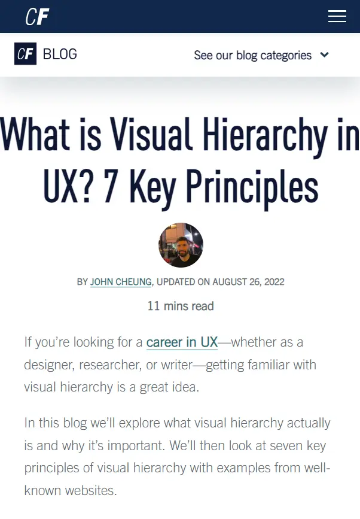

Visual Hierarchy
CareerFoundry
Website: careercoundry.com
The website is a great example of visual hierarchy. The most important elements, such as the course offerings and call-to-action buttons, are prominently displayed and catch the user's attention first. The use of different sizes, colors, and positions helps guide the user's eye through the page.
Hick's Law
IMPACT
Website: IMPACT
The IMPACT website demonstrates Hick's Law by presenting a limited number of choices in its navigation system. This reduces the time users need to make a decision, thus improving the user experience.
Fitt's Law
Interaction Design Foundation
Website: interaction-design.org
The Interaction Design Foundation's website exemplifies Fitt's Law by placing important interactive elements, such as course categories and sign-up buttons, in easily accessible locations. The size and positioning of these elements make them easy to click, enhancing the user experience.